Exploration in Deep RL
## Exploration vs. Exploitation <br><br><br> - Learning agents need to trade off: - <span class="alert">Exploitation</span>: Maximise performance based on current knowledge - <span class="alert">Exploration</span>: Gather more knowledge - Agents need to gather information to make the best overall decisions - The best long-term strategy likely involves short-term sacrifices --- ## Let's simplify things <br> <br> Imagine an environment in which: - there is one single state - actions no longer have long-term consequences on the environment - actions only impact immediate reward
Multi-armed bandit
## Multi-armed bandit <div class="center"> <div class="r-stack"> <img class="fragment" src="img/mab_octo0.jpg"> 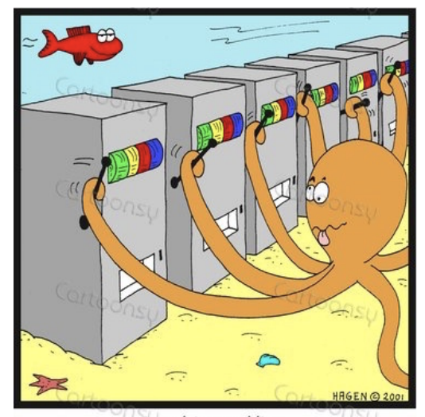 </div> </div> --- ## Multi-armed bandit <br><br><br> - A multi-armed bandit is a set of distributions $\\{\mathcal{R}_a \vert a \in \mathcal{A} \\}$ - $\mathcal{A}$ is a known set of actions (or "arms") - $\mathcal{R}_a$ is a distribution on rewards, given action $a$ - At each step $t$ the agent selects an action $A_t \in \mathcal{A}$ - And receives a reward $R_t \sim \mathcal{R}_{A_t}$ <br> <br> <p class="fragment"><span class="alert">Goal</span>: Maximise the cumulative reward $\sum_{i=1}^t R_i$</p> --- ## Multi-armed bandit. Values and Regret <br><br><br> - The <span class="alert">action-value</span> for action $a$ is the expected reward: $$ q(a) = \mathbb{E} \left[ R_t \vert A_t = a \right] $$ - The <span class="alert">optimal value</span> is $$ v^{\ast} \\quad = \\quad \max_a q(a) \\quad = \\quad \max_a \mathbb{E} \left[ R_t \vert A_t = a \right] $$ - <span class="alert">Regret</span> of action $a$ is $$ \Delta_a = v^{\ast} - q(a) $$ --- ## Multi-armed bandit. Regret <br><br><br> We are interested in minimising the <span class="alert">total regret</span>: $$ L_t = \sum_{n=1}^t v^{\ast} - q(A_n) = \sum_{n=1}^t \Delta_{A_n} $$ <br> <br> - Maximise cumulative reward == minimize total regret - The summation spans over the full "lifetime of the agent" --- ## Multi-armed bandit. Action values <br><br><br> - The <span class="alert">action-value</span> for action a is the expected reward: $$ q(a) = \mathbb{E} \left[ R_t \vert A_t = a \right] $$ - A simple estimate is the average of the sampled rewards: $$ Q_t(a) = \frac{\sum_{n=1}^t \mathbb{I}(A_n = a) R_n}{\sum_{n=1}^t \mathbb{I}(A_n = a)} $$ - The count for action $a$ is: $$ N_t(a) = \sum_{n=1}^t \mathbb{I}(A_n = a) $$ --- ## Multi-armed bandit. Action values <br><br><br> - Action values can be updated incrementally: $$ Q_t(A_t) = Q_{t-1}(A_t) + \alpha_t(R_t - Q_{t-1}(A_t)), $$ with $$ a_t = \frac{1}{N_t(A_t)} \\qquad \text{and} \\qquad N_t(A_t) = N_{t-1}(A_t) + 1 $$ --- ## Multi-armed bandit. Algorithms <br><br><br> - <span class="alert">$\text{greedy}$</span>. Select action with highest value: $A_t = \argmax_a Q_t(a)$ - can get stuck in sub-optimal policies forever - <span class="alert">$\epsilon\text{-greedy}$</span>. Select greedy action with probability $1-\epsilon$ <br> <br> <p class="fragment">Both $\text{greedy}$ and $\epsilon\text{-greedy}$ with constant $\epsilon$ have <span class="alert">linear total regret</span>. </p> --- ## Optimism in face of uncertainty <div class="center"> <div class="r-stack"> 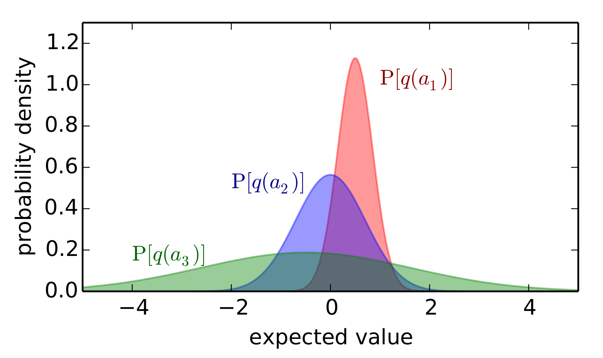 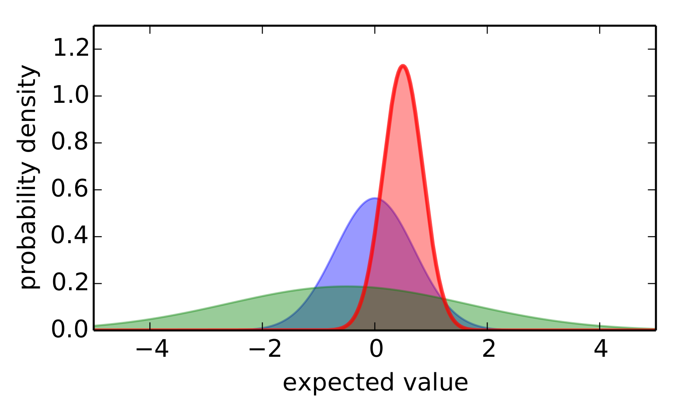 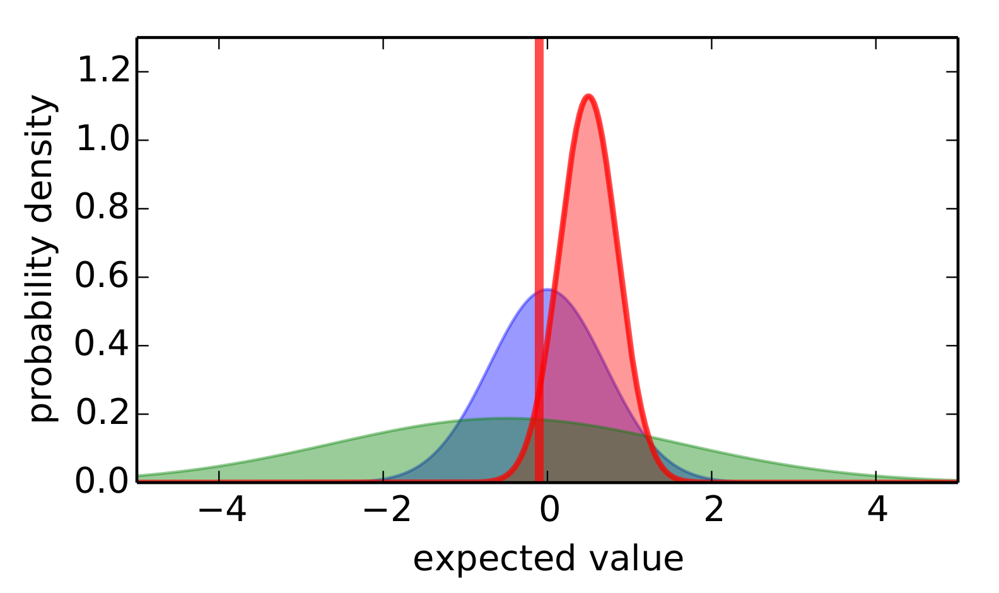 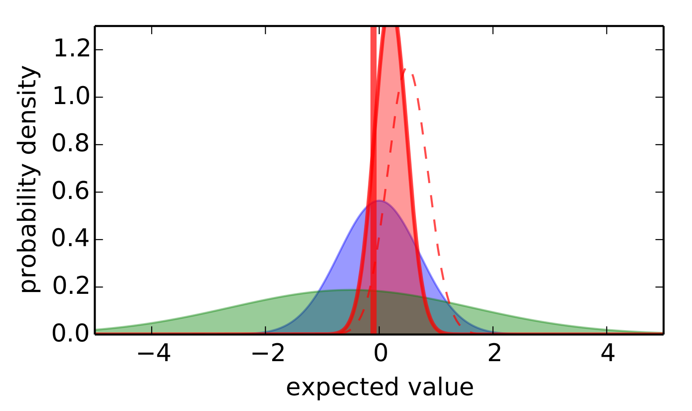 <img width="80%" src="./img/ofu4.png" alt="ofu4" class="fragment"> 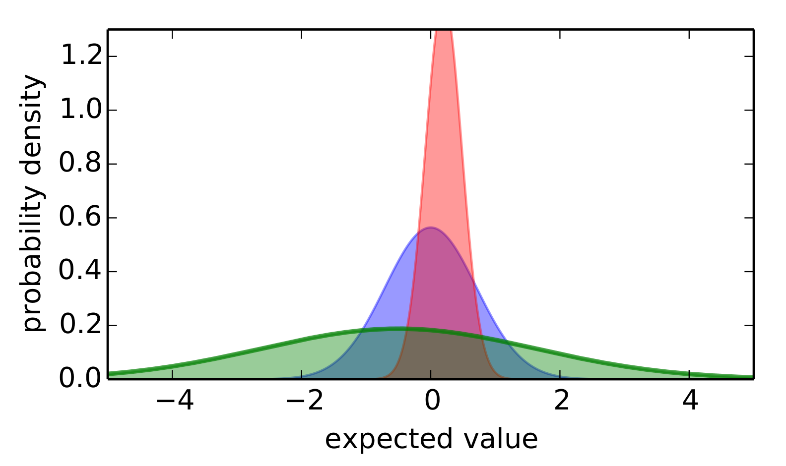 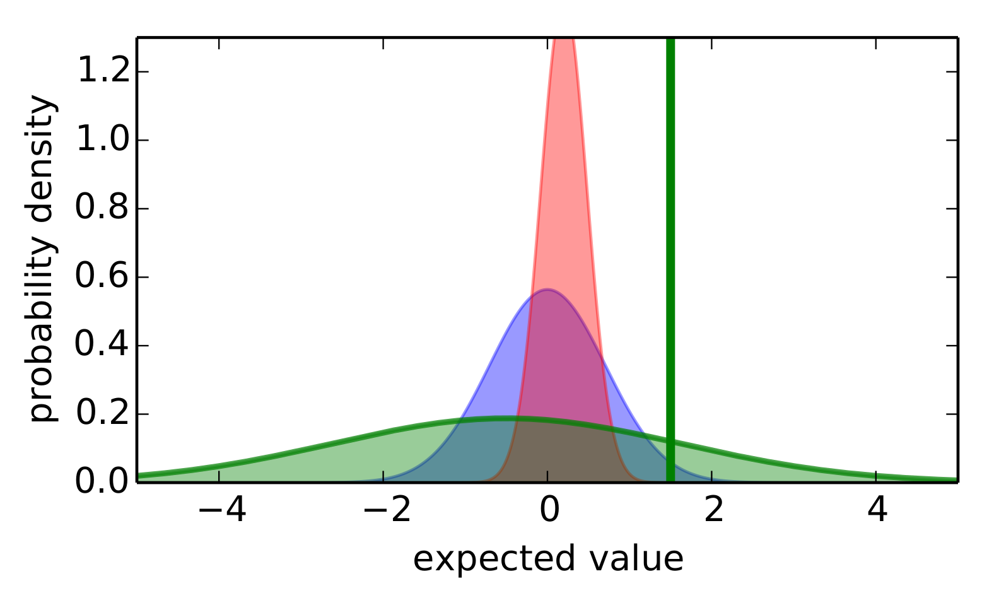 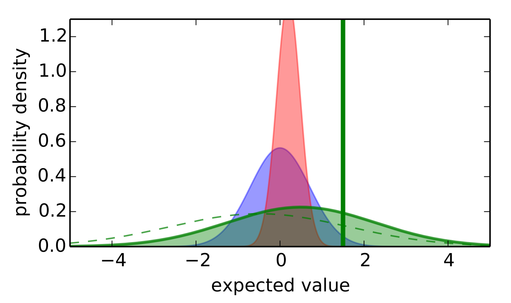 </div> </div> --- ## Upper Confidence Bound (UCB) <br><br> <ul> <li>Estimate an upper confidence $U_t(a)$ for each action value, such that: $q(a) \le Q_t(a) + U_t(a)$</li> <li class="fragment">Select action maximizing <span class="alert">upper confidence bound</span>: $$ a_t = \argmax_a Q_t(a) + U(a) $$ </li> <li class="fragment">The uncertainty should depend on the number of times N_t(a) action a has been selected <ul> <li class="fragment">small $N_t(a) \Longrightarrow$ large $U_t(a)$ (estimated value is uncertain)</li> <li class="fragment">large $N_t(a) \Longrightarrow$ small $U_t(a)$ (estimated value is accurate)</li> </ul> </li> <li class="fragment">Then $a$ is only selected if either <ul> <li>$Q_t(a)$ is large (the action is good)</li> <li>$U_t(a)$ is large (the action is highly uncertain)</li> </ul> </li> </ul> --- ## Upper Confidence Bound (UCB) <br> Pick a maximal desired probability $p$ so the true value does not exceed an upper bound: $p = e^{-2N_t(a) U_t(a)^2}$ And solve for this bound $U_t(a)$: $$ U_t(a) = \sqrt{\frac{-\log p}{2N_t(a)}} $$ <span class="alert">Intuition</span>: the probability that we will have a mean that is farther away from the sample mean than this bound is smaller than $p$. <p class="fragment"><span class="alert">Idea</span>: reduce $p$ as we observe more rewards, e.g., $p=\frac{1}{t}$. $$ U_t(a) = \sqrt{\frac{\log t}{2N_t(a)}} $$ </p> --- ## Upper Confidence Bound (UCB) <br> <br> In practice: $$ a_t = \argmax_a Q_t(a) + c \; \sqrt{\frac{\log t}{N_t(a)}} $$ where $c$ is a hyper-parameter. <br> <br> <p class="fragment"><span class="alert">Theorem (Auer et al., 2002)</span>: <br> UCB with $c = \sqrt{2}$ and gaussian rewards achieves logarithmic expected total regret + some constant. </p> --- ## Upper Confidence Bound. Is this working? <br><br> <div class="center"> 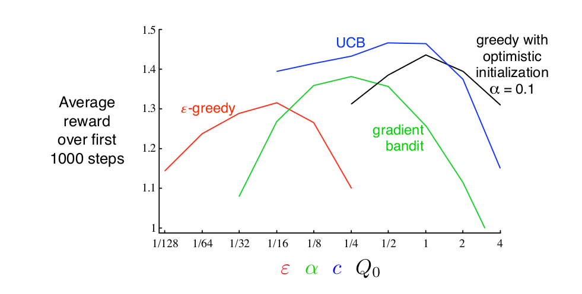 </div>
AlphaGo / AlphaZero / MuZero
Action search space. Chess vs Go
### Simulation-based search <br> 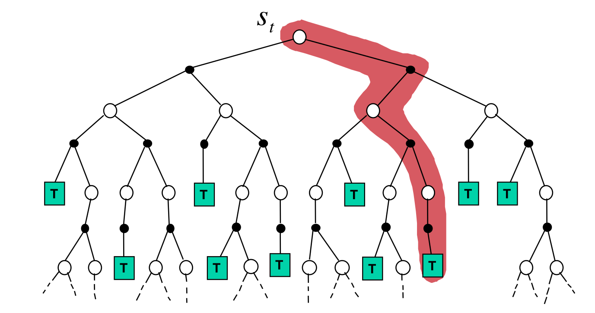 <br> - Sample-based variant of <span class="alert">Forward Search</span> - Simulate episodes of experiences from the current state and compute: $$ V(S_t) = \frac{1}{K} \sum_{k=1}^{K} G_t^k \rightsquigarrow V^{\pi}(s) \\qquad Q(S_t, A_t) = \frac{1}{K} \sum_{k=1}^{K} G_t^k \rightsquigarrow Q^{\pi}(s, a) \\ $$ --- ### Monte-Carlo Tree Search <br> In MCTS, we incrementally build a search tree containing visited states and actions, together with estimated action values $Q(S_t,A_t)$ for each of these pairs. <ul> <li class="fragment">Repeat (for each simulated episode) <ul> <li class="fragment"><span class="alert">Select</span> until you reach a leaf node of the tree, pick actions according to $Q(s ,a)$.</li> <li class="fragment"><span class="alert">Expand</span> search tree by one node</li> <li class="fragment"><span class="alert">Rollout</span> until episode termination with a fixed simulation policy</li> <li class="fragment"><span class="alert">Update</span> action-values $Q(S_t,A_t)$ for all state-action pairs in the tree $$ Q(S_t, A_t) = \frac{1}{N(s,a)} \sum_{k=1}^{K} \sum_{u=t}^{T} \mathcal{1}(S_u^k,A_u^k = s,a) G_u^k \rightsquigarrow Q^{\pi}(s, a) $$ </li> </ul> </li> <li class="fragment">Output best action according to $Q(s_t, a_t)$ in the root node when time runs out.</li> </ul> --- ### Main estimators in AlphaZero / MuZero <div class="center"> <div class="r-stack"> 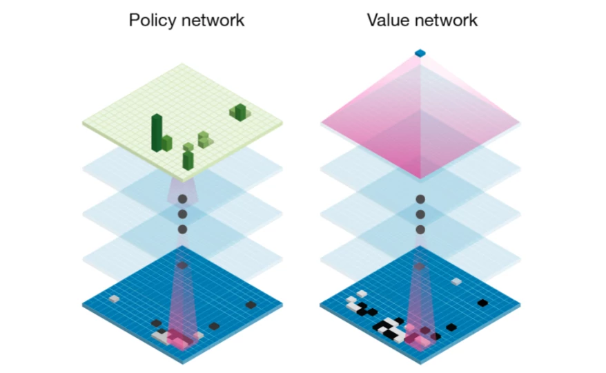 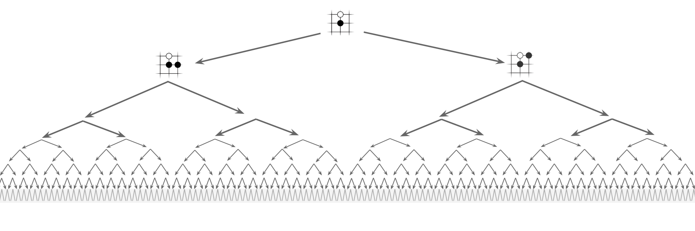 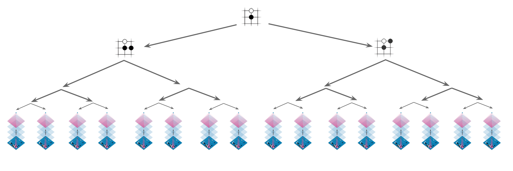 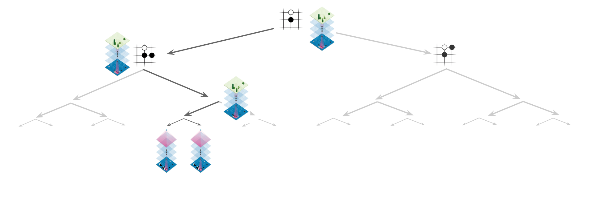 <img width=60% src="img/muzero_search_tree.webp" alt="" class="fragment current-visible"> </div> </div> --- ### Node Selection. Prior UCB (PUCB) <br><br> <div class="center"> <div class="grid c2"> <img src="img/muzero_search_tree.webp" alt=""> <div style="text-align: left"> <br> <br> Remember UCB? $$ U(s,a) = v(s,a) + c \cdot p(s,a) $$ where $c$ is depending on state counts $N(s,a)$. </div> </div> </div> --- ### MuZero. Search, action-selection and training <br><br> 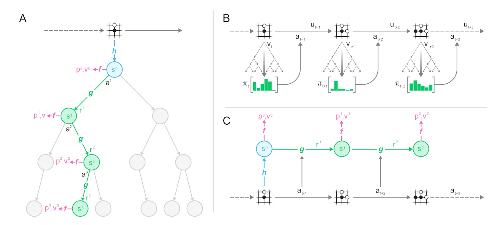 --- ### MuZero. Search, action-selection and training <br><br> 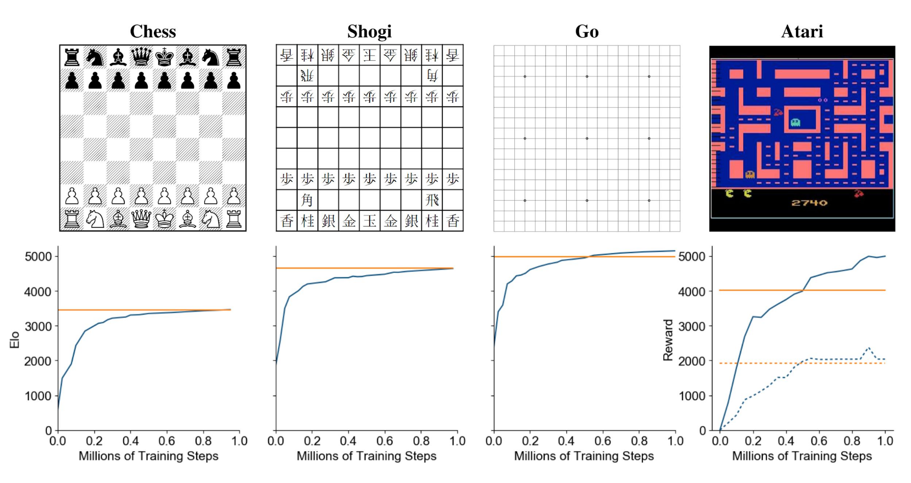
Exploration bonuses in Deep RL
## Exploration bonus <br> Until now we only worked with <span class="alert">extrinsic</span> rewards, typically environmental signals. However rewards can be <span class="alert">intrinsic</span>: </br> - Social (influence, imitation, explanation) - Desire to control (empowerment) - <span class="alert">Curiosity</span> (reach new states) - Losses learned via meta-learning - Learning progress <p class="fragment"> We can use it like this: $$ r_t = r^e_t + r^i_t, $$ where $r^e_t$ is the original, environmental reward and $r^i_t$ is the intrinsic reward. </p> --- ## Intrinsic Curiosity Module (ICM) <br> <br> <br> - a learned embedding $\phi(s_t; \\; \theta) \rightarrow \mathbb{R}^k$. - an <span class="alert">inverse</span> model $g(\phi(s_t), \\; \phi(s_{t+1}); \\; \varphi) \rightarrow \mathcal{A}$. Learns to predict action $a_t$ from its consequences on $s_t$. - a <span class="alert">forward</span> model $f(\phi(s_t), a_t; \\; \omega) \rightarrow \mathbb{R}^k$. Learns to predict the embedding of the next state, $\phi(s_{t+1})$. <br> <br> <br> <p class="fragment"> The intrinsic reward is the error of the forward model in the embedding space: $$ r^t_i = \frac{\eta}{2}\lVert \hat{\phi}(s_{t+1}) - \phi(s_{t+1}) \rVert^2_2 $$ --- ## Intrinsic Curiosity Module <div class="center">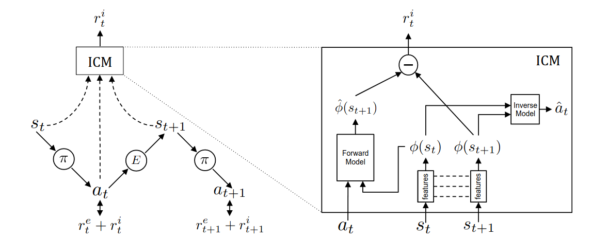</div> --- ## Intrinsic Curiosity Module <div class="center"> <div class="grid c3"> 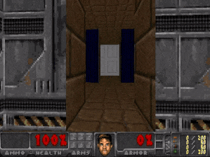 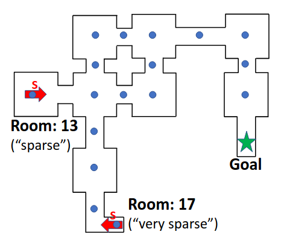 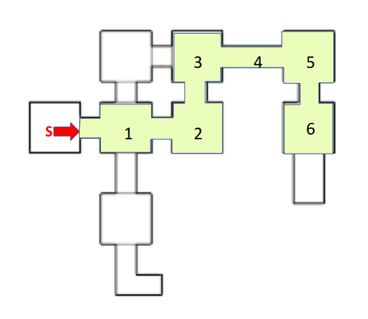 </div> </div> --- ## Random Network Distillation (RND) <br> <br> <br> - a _target_ neural network $f_{\text{rnd}} : \mathcal{S} \rightarrow \mathbb{R}^k$ - a _predictor_ neural network $\hat{f} : \mathcal{S} \rightarrow \mathbb{R}^k$ which is trained to track the output of the random network. <br> <br> <br> <p class="fragment"> The objective is also used as <span class="alert">intrinsic reward</span>: $$ r^t_i = \lVert \hat{f}(s_t; \theta) - f(s_t) \rVert^2_2 $$ </p> --- ## Random Network Distillation <div class="center"> <video width=50% data-autoplay src="https://cdn.openai.com/research-covers/prediction-based-rewards/animated-pyramid_10-29e.mp4"></video> </div> --- ## Random Network Distillation <div class="center">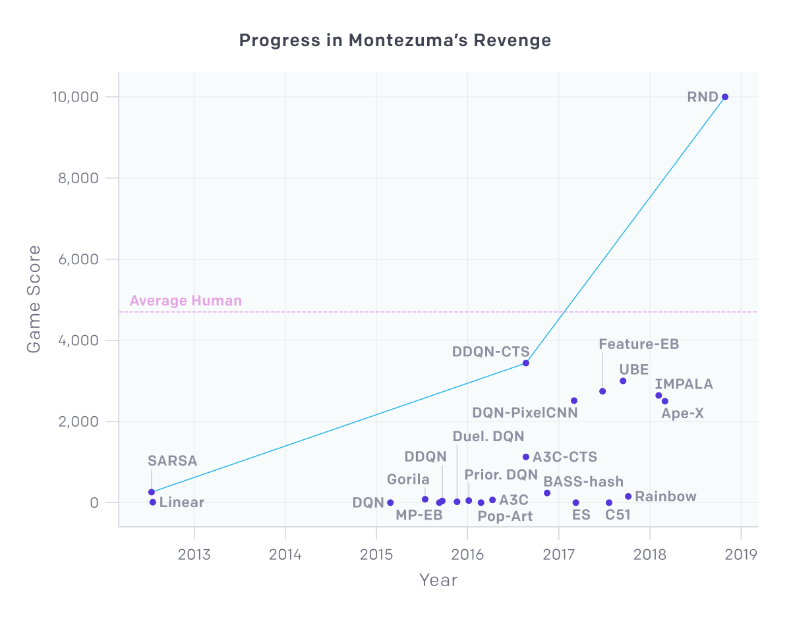</div> --- ## Random Network Distillation <div class="center"><img width=90% src="./img/rnd_montezuma.png" alt="rnd_montezuma"></div> --- ## Are we there yet? <div class="center"> <div class="grid c2"> <img src="./img/awty_montezuma.png" alt="montezuma_intrinsic_comparison"> 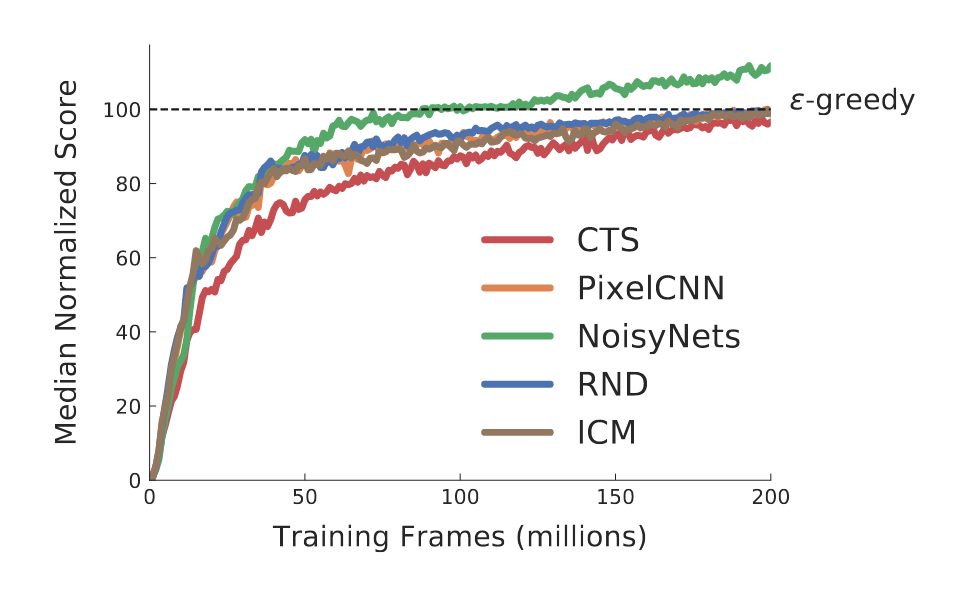 </div> </div> --- ### Bootstrap Your Own Latent for Exploration <br> <br> <br> - use a <span class="alert">self-supervision</span> inspired method - to construct a multi-step predictive model - in the latent space <br> <br> <br> <p class="fragment"> Use the sum of prediction losses across future timesteps as an intrinsic reward. </p> --- ### Bootstrap Your Own Latent ~for Exploration~ for Self-Supervised Learning <div class="center"> 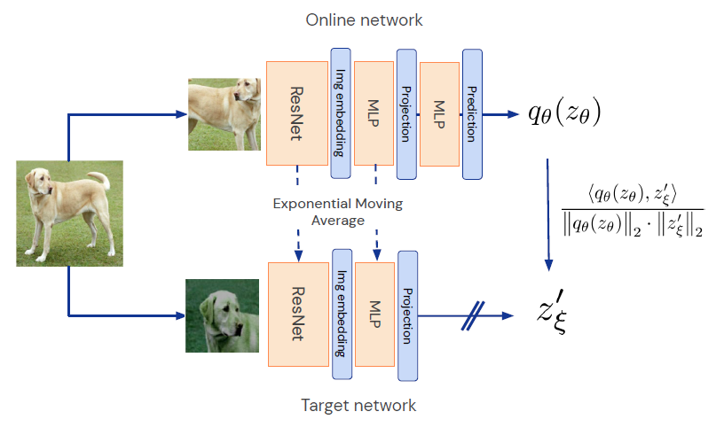 <p class="fragment"> <span class="alert">Goal:</span> minimize the distance between the embeddings of two augmentations of the same image. </p> <p class="fragment"> Target network parameters $\xi$ are updated via an expected moving average: $\xi = \tau\xi + (1 - \tau)\theta$. </p> </div> --- ### Bootstrap Your Own Latent for Exploration <div class="center"> <div class="grid c2"> 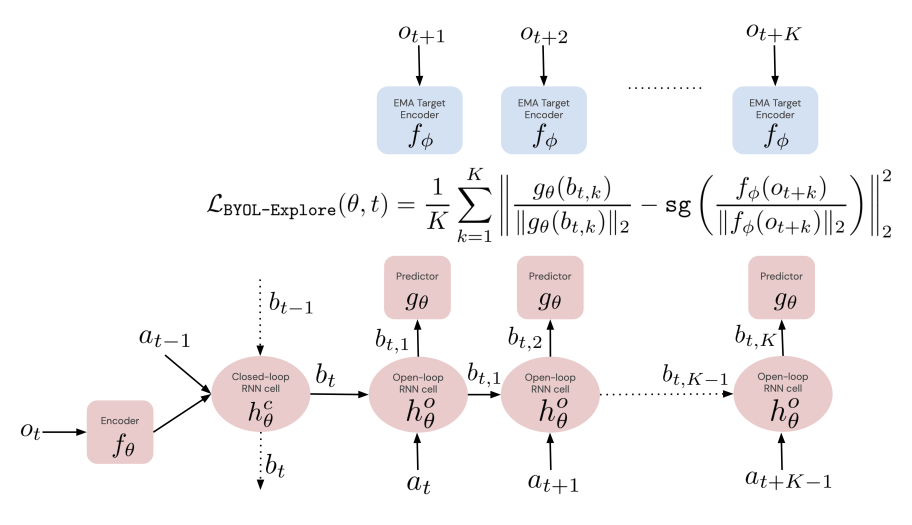 <div> <ul> <li class="fragment">an embedding module $f_{\theta}$</li> <li class="fragment">closed loop RNN aggregates past embeddings and actions,</li> <li class="fragment">open loop RNN simulates <span class="alert">future</span> latent states while only observing actions,</li> <li class="fragment">target network generates learning targets for the world model.</li> <li class="fragment"><span class="alert">Goal</span>: minimize the distance between the future predictions of the model and the embeddings of the target network</li> </ul> </div> </div> </div> --- ### Bootstrap Your Own Latent for Exploration <div class="center"> <div class="grid c2"> 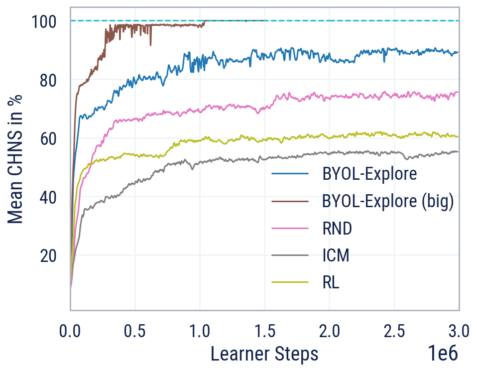 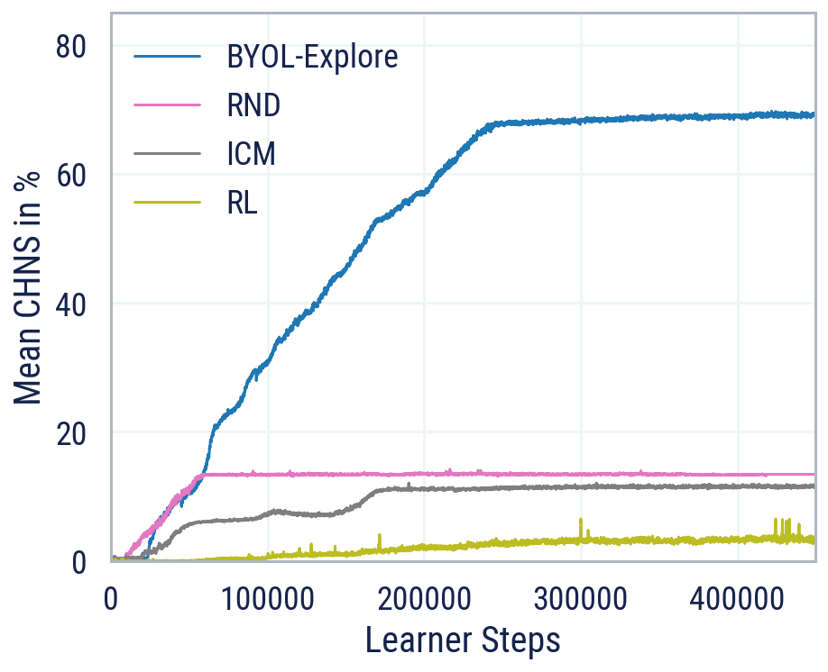 </div> <strong>Left:</strong> Mean capped human normalised score (CHNS) across the 10 most difficult exploration games in Atari. <strong>Right:</strong> Mean CHNS on DM Hard-8. </div> --- ### Bootstrap Your Own Latent for Exploration <div class="center"> 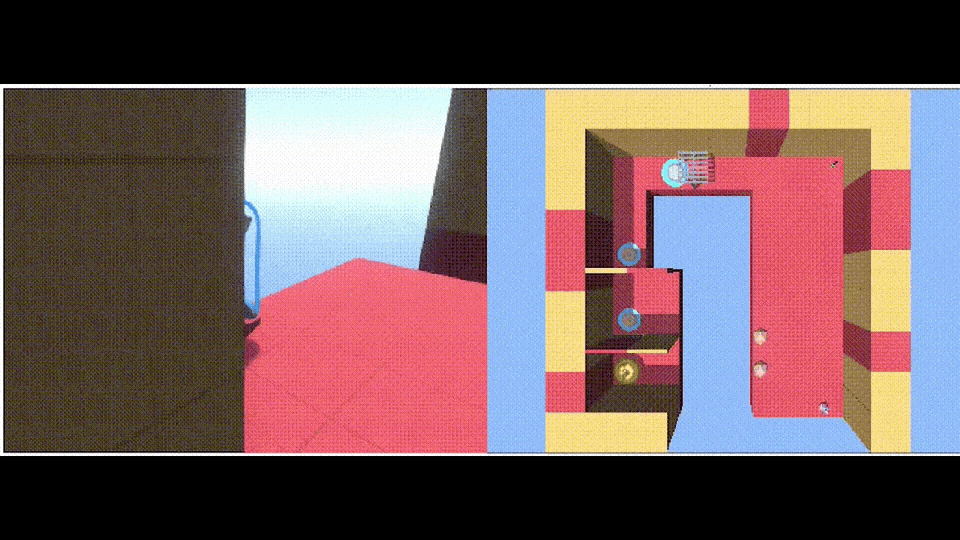 <br> Agent has to pick the two boulders and use them to plug the holes in the floor. </div>
Thank You!